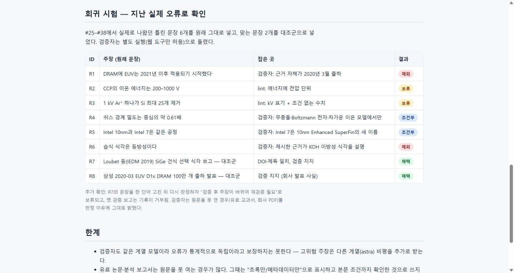

#39
반도체 지식·논문 탐색·검증 에이전트 / 스킬 구조화
지시 (원문)
이제 claude - jev - astra 구조를 넘어서 반도체 관련 지식이나 논문을 잘 탐색하고 검증하는 에이전트 혹은 스킬을 구조화 하고 싶어.
분석 (Claude의 정리)
- 지금까지는 Claude가 쓰고, astra·jev를 그때그때 불러 자문받았다. 그 결과 쓴 쪽이 스스로 검증해 오류가 늦게 발견됐다 (#38에서 51개 용어 수정: 교과서 모델 수치의 일반화, V/eV 단위, EUV DRAM 연도, Intel 7 동일시 등).
- 목표: "찾기 → 주장 단위 장부 → 쓴 쪽과 분리된 검증 → 규칙으로 채택"을 반복 가능한 절차(스킬)와 역할이 나뉜 에이전트, 그리고 규칙을 코드로 강제하는 도구로 만든다. 지난 실제 오류로 체계가 그것들을 잡는지 확인한다.
과정
- 프로젝트 확인:
.claude/없음, 도구는tools/ask_jev.py뿐. 설계 초안 작성(스킬 1 + 에이전트 3 + 스크립트 4 + 주장 장부). - 설계를 astra xhigh(중요 판단)에 비평 요청(백그라운드). 동시에 jev 자문 4건: 새 9단계로 분리 → 0.80 · 구성 → 스킬 1 + 에이전트 3 + 스크립트 (선택 b, 확률 1.00) · 위치 → 사용자 전역 쪽 (b, 확률 0.62, 신뢰도 0.24로 낮음) · 만든 뒤 시범 운영 → 0.59. 위치는 신뢰도가 낮고, 도구가 프로젝트
.env·tools/에 의존하며 이 프로젝트가 과정 공유가 목적이라 프로젝트 폴더.claude/로 결정 (전역 복사는 쉬움). - 학술 메타데이터 검색
lit_search.py(OpenAlex·Crossref·arXiv)와 출처 실재 확인check_refs.py작성·시험: 실제 IEDM 2019 SiGe 선택 식각 논문 등 검색, 가짜 DOI는 not_found. 부제를 뺀 짧은 제목이 불일치로 나오는 문제 → 포함 관계면 일치로 고침, 틀린 제목은 여전히 불일치(0.46). - astra xhigh 비평 수신, 핵심: ① 출처 등급은 사실성 순위가 아니라 유형 — 증거 성격·접근 범위를 따로 기록 ② "새 컨텍스트"만으로는 독립성이 아님 → 입력·권한을 실제로 분리 ③ jev가 증거 충돌을 선택 문제로 종결하면 안 됨 → 충돌은 보류 ④ DOI·HTTP 200은 내용 검증이 아님 ⑤ 검증 후 편집하면 검증 무효화 필요 ⑥ v1은 에이전트 2개(수집·검증)로, 용어 감사는 체크리스트·스크립트로. jev(에이전트 3개)와 astra(2개)가 엇갈림 → 규칙상 중요 판단은 astra xhigh 등급이고, jev 질문에 "2개" 선택지가 없었으므로 astra 안을 따름.
- 장부 도구
claims.py작성 (lint: 에너지 지표의 전압 단위·조건 없는 수치·사건 종류 없는 날짜 / blind: 작성자 판단을 뺀 검증 입력 / record: 내용 해시가 다르면 거부 / gate: 규칙표로 채택·조건부·보류·제외). 지난 실제 오류 6개 + 정상 2개로 회귀 사례 작성 → lint가 R2(200–1000 V)·R3(1 kV Ar⁺) 오류, R4(0.61 조건 없음) 경고를 잡음. 삼성 보도자료 URL이 Python 요청에서만 시간 초과 → 스트림 대신 일반 GET + 재시도로 고쳤으나 이 서버는 여전히 간헐적으로 실패(실재 여부는 수동 확인). - (사용자가 새 지시 #40을 보내 이 작업은 잠시 멈춤 — #40과 번갈아 진행)
- 스킬
.claude/skills/semi-research/(SKILL.md 절차, policy.md 출처 등급·반도체 함정 체크리스트 12개, schema.md 장부 형식)과 에이전트paper-scout(수집만, 결론 금지)·claim-verifier(웹 도구만, 로컬 파일 접근 없음) 작성. - 시범 검증: 새 에이전트는 세션을 다시 시작해야 올라와서 이번 세션에서 바로 호출되지 않음. 일반 에이전트로 대신하면 파일 접근이 열려 분리가 깨지므로, 별도 headless 실행(
claude -p --agent claim-verifier, 로컬 파일 도구 전부 금지)으로 같은 격리를 걸어 blind 입력만 넘김. - 결과 (8개 모두 기대대로): R1 EUV DRAM "2021년 이후" → 반박(근거 자체가 2020년 3월) 제외 · R2·R3 lint 오류로 보류 · R4 Bohm 0.61 → 부분 지지(무충돌·Boltzmann 전자·차가운 이온 모델에서만) 조건부 · R5 Intel 10nm = Intel 7 → 부분 지지(새 이름) 조건부 · R6 "습식 = 등방성" → 반박(제시한 근거가 KOH 이방성 식각 설명) 제외 · R7·R8 정상 대조군 채택. 검증자는 원문을 못 연 경우(유료 교과서, 회사 PDF)를 이유에 밝힘. 추가로 R7 문장을 한 단어 고치자 gate가 "재검증 필요"로 보류하고 옛 검증 기록을 거부함을 확인.
- 체계 설명 페이지 작성(역할·권한·등급·회귀 결과·한계), CLAUDE.md에 사용 규칙 추가, 증거 스크린샷.
- 민감정보 검사 통과(비공개 data/·ledger/ 미포함 확인), 커밋 메일 no-reply 확인 → 커밋·푸시. Pages 배포 약 20초 만에 완료, 체계 페이지·기록·목차 200 확인 (
<계정>.github.io/etch-paper-study/).
결과 / 증거
성공 스킬 1(semi-research) + 에이전트 2(paper-scout, claim-verifier) + 도구 4(claims.py, lit_search.py, check_refs.py, 회귀 사례). 회귀 시험 8/8 기대대로 판정. 한계: 검증자도 같은 계열 모델이라 오류의 통계적 독립은 보장 못 함(고위험 주장은 astra 비평 추가), 유료 원문은 접근 범위를 낮춰 표시.
